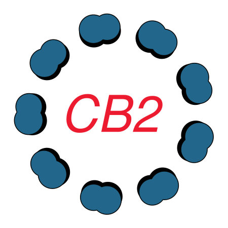

The CiliaBuilder2 tool builds parametric models of cilia and centrioles in ChimeraX. A model is assembled in two stages: first a STAR particle list describes where each repeating unit sits and how it is oriented; then a map, atomic model or 3D object is attached, i.e. copied onto every particle in that list.
Open the tool from Tools → Higher-Order Structure → CiliaBuilder2 or with the command cbui.
The window has three sections, selected with the tabs on its left side:
Undo and Redo buttons at the top of the window step backward and forward through build and attach actions.
z_align_*.cxc scripts in the
example
folder show how to rotate and resample an EMDB map for this.The Build section has four tabs. Each build creates a new STAR model in the ChimeraX model panel, shown as markers with arrows indicating particle orientation. A STAR model can then be used on the Attach page.
Builds the outer ring of doublet (cilium) or triplet (centriole) microtubules.
| Field | Description |
|---|---|
| Length (Å) | Length of each microtubule along Z. |
| No. of doublets | Number of microtubules in the ring (1–9), evenly spaced around the circle. |
| Radius (Å) | Distance from the cilium axis to each microtubule. |
| Periodicity (Å) | Spacing between consecutive particles along a microtubule, typically the repeat length of the map you will attach (e.g. 96 nm repeat = 960 Å). |
| Twist per layer (deg) | Extra in-plane rotation added to each successive particle along a microtubule, for twisted or tapering geometries. Leave at 0 for a straight axoneme. |
| Z offset (Å) | Z position of the first particle. |
| Random | When enabled, each microtubule is shifted along Z by a random amount (up to about half of the periodicity), so the repeats of neighbouring microtubules are not in register. |
| Continue from STAR | An existing microtubule STAR model to extend; used by Continue microtubules. |
Buttons:
Builds the central apparatus along the cilium axis.
| Field | Description |
|---|---|
| Length (Å) | Length of the central pair along Z. |
| Periodicity (Å) | Spacing between consecutive particles (e.g. 32 nm repeat = 320–333 Å). |
| Z offset (Å) | Z position of the first particle. |
| Central pair mode | Single line: one line of particles on the axis, for a map containing the whole central pair. C1 + C2 lines: two parallel lines, one for each central microtubule. |
| C1/C2 distance (Å) | Separation of the C1 and C2 lines in C1 + C2 lines mode. |
Press Build central pair to create the STAR model.
Builds a surface representing the ciliary membrane around the axoneme.
| Field | Description |
|---|---|
| Length (Å) | Length of the membrane along Z. |
| Radius (Å) | Radius of the membrane tube. |
| Thickness (Å) | Thickness of the bilayer. |
| Z offset (Å) | Z position where the membrane starts. |
| Distortion level (0–10) | How far the surface departs from a perfect cylinder; 0 gives a smooth tube, larger values give a more irregular membrane. Press Enter or leave the field to update the selected membrane in place, or the latest built/restored membrane if none is selected. The random pattern and other model settings are retained. These edits support Undo/Redo and session JSON. |
| Tip dome cap | Close the distal end of the membrane with a dome. |
Press Build membrane to create the surface.
cellPACK-style membrane... opens the built-in particle preview for the selected membrane, or the latest membrane if none is selected. Choose a different Target membrane by name and ID in the same window. Each target loads its own saved settings; unfinished edits are retained per membrane until the window closes. New targets use thickness-based default bead radii. The list updates when membranes are added, renamed or closed. Switching targets does not move or repack existing particles; it is disabled during preparation/packing, so cancel first to switch. Packing and export act only on the chosen membrane. The window has a short linked cellPACK acknowledgment instead of explanatory paragraphs. The ingredient table lets you enable, add, rename or remove lipid beads, proteins and other beads. Each protein has its own PDB ID (for example 1AFO) and outward axis. Lipids have a Source choice: Bead, PDB ID or Local file. Enter an ID or use Browse... for a PDB, mmCIF, MOL2 or SDF file (compressed PDB/CIF also supported). Molecular lipids use the atomic van der Waals shape and source dimensions, not a single bead; their Radius field is disabled. Choose the outward axis toward the leaflet exterior; the outermost atomic envelope sits on the leaflet and the molecule extends into the wall. One non-water, non-polymer residue from the first model supplies the template. Enter its Residue name if there are several component types, for example DGA in PDB 1K4C. Repeated copies of that residue are not duplicated inside the template. This selector does not chemically identify lipids. Only enabled positive-amount entries are packed. Amount (%) means nominal outer-surface coverage for proteins (total at most 100%), and relative area share for lipids/other beads, normalized on each leaflet after reserving protein area. Beads can use both, outer or inner leaflets and have editable radii; proteins keep their PDB dimensions. Disable proteins for offline bead-only packing. Leave Automatic dense-fill budget enabled, choose a seed, then choose Pack membrane. The particle target grows as beads get smaller; halving radius needs roughly four times as many beads. The former 50,000 cap no longer thins these layers. Automatic targets above 1,000,000 are rejected with advice to increase bead size or reduce membrane area, rather than silently producing a sparse layer. Large populations take more time/memory. Disable automatic budgeting only for a deliberately sparse preview using Manual preview limit; the dialog warns when this prevents dense filling. Repack existing membranes to apply the change; saved layouts are not altered on load. The smooth shell is hidden: only lipid beads/molecules and PDB-derived protein surfaces remain visible. Packing follows both leaflets and any distorted dome, not the flat end rims. Proteins span the wall mid-plane and use their original Angstrom dimensions; lipid bead centers lie on the two leaflets. Random area-weighted seeds and neighbor-contact gap filling replace global rows. Face-plane intersections and projection constrain candidates to the curved mesh, with random protein spins. Each ingredient uses one shared mesh duplicated through ChimeraX instancing, not separate atomic models per site.
The protein ratio is nominal coverage by projected bounding disks, not particle count. Overlap rejection and safety limits can lower the achieved ratio, which is reported after packing. Counts are area-derived, and the search effort also scales with population. Lipid targets estimate 90% coverage; this is not guaranteed. Lipid-protein collision checks use the same triangle mesh as the displayed protein. Enclosing boxes are only a quick preliminary filter, not excluded volume. Surface-distance and closed-mesh inside/outside checks allow beads beside irregular proteins without intersections. Cached mesh indices and bounded extra gap-search passes help fill isolated pockets. Invalid open or inconsistent protein surfaces fail safely. Protein-protein checks still use conservative enclosing spheres. Repack to apply the new checks; loading an old layout does not change its saved positions or particle sizes. Protein geometry is fetched once from RCSB and represented by a shared 6-Angstrom Gaussian surface from the first deposited model's protein atoms. Initial fetching needs internet or a cached file and completes before cancellable packing starts. No extra installation is required. This is independent geometric packing informed by Johnson et al., cellPACK (2015), not the upstream engine, a globally optimal solver, or an atomic bilayer. Bead lipids/other beads are coarse proxies; molecular lipids use their atoms' default van der Waals radii. Atom-to-atom and atom-to-bead collision tests reject overlaps without reserving one large sphere around a long lipid; lipid atoms are also checked against the displayed protein mesh. Outward axes and head/tail embedding are manual assumptions, not inferred biology. Up to 500 atoms and 200-Angstrom source extent per lipid are supported. The ten-million instanced-triangle budget applies to all molecular entries; reaching it is reported and can reduce coverage.
Export package... saves just this membrane and its preview to a unique folder with APR/CPR JSON, meshes, ingredients and a pseudo-site mmCIF. All asset references are relative. Open the APR with cbopenapr or open the CIF directly. APR includes full protein/lipid meshes and beads, with the shell hidden; CIF contains particle centers, not replicated atoms. Packing supports Undo/Redo and session JSON, including embedded protein and molecular lipid geometry, ingredient recipes and random spins for offline restoration/repacking. Original lipid files are not required once their templates are embedded. Changing membrane distortion clears stale particles and reveals the guide again; pack again or Undo to recover them. Old saved packings retain their exact positions. Choose Pack membrane again to replace one with the new stochastic layout.
Places intraflagellar transport (IFT) particles next to a microtubule. Choose the IFT type (Anterograde or Retrograde); the matching angle field is used.
| Field | Description |
|---|---|
| IFT mode | Train: build a row of IFT particles along one microtubule. Pick STAR point: place a single IFT particle at a STAR marker you click. |
| Distance from STAR center (Å) | Radial distance of the IFT particles from the cilium axis. |
| Anterograde / Retrograde angle (deg) | Rotation about the microtubule axis applied to anterograde or retrograde trains, respectively. |
In Train mode:
| Field | Description |
|---|---|
| Target STAR model | The microtubule STAR model the train runs along. |
| Microtubule number | Which microtubule (its rlnHelicalTubeID) to follow. |
| Angle (deg) | Additional rotation about the microtubule axis, added to the anterograde/retrograde angle. |
| Offset (Å) | Distance from the start of the microtubule to the first IFT particle. |
| Periodicity (Å) | Spacing between IFT particles in the train. |
| Repeating number | Number of particles in the train. |
Press Build IFT train STAR. In Pick STAR point mode, press Select STAR point for IFT and then click a STAR marker in the graphics window.
The Attach section has two tabs: Attachment and Geometric drawing.
Copies a map, PDB/mmCIF model or GLB object onto every particle of a STAR model. Open the map or model in ChimeraX first (for example open emdb:2132 or open mymodel.glb), then:
| Field | Description |
|---|---|
| Attachment Z rotation (deg) | Rotates every copy about its own long (Z) axis, to set which face of the repeating unit points toward the cilium centre. Changes are applied to the current attachment immediately. |
| Attachment Y rotation (deg) | Rotates every copy about the Y axis, e.g. to flip the polarity of the repeat. |
| Use fixed center for GLB & PDB | By default each map is placed by its box centre and each GLB/PDB by the centre of its bounding box. A GLB or PDB usually covers only part of the map box, so its bounding-box centre differs from the map centre and the copies end up shifted. Enable this option to give the centre explicitly, in the model's own coordinates, with the X/Y/Z fields. |
| Read center coordinate from map | Fill the X/Y/Z fields with the box centre of the map chosen in the list next to the button. Use the map the GLB or PDB was made from (or fitted into) so it is placed exactly where that map would be. |
To place a GLB at the same position as its source map, the GLB must be saved in the map's coordinates; see GLB files. When CiliaBuilder2 has retained the source volume's grid-center metadata, that center is used automatically. An explicitly checked fixed center overrides it.
Attachments support ChimeraX clip front and clip back. Save session JSON records the scene cut planes and each model's clipping permissions. Loading restores the attachments, runs view orient, and reapplies the cuts. clip off and clip model #... false are preserved as well. These are scene-wide planes, not separate cuts for each attachment. Camera-relative clip near and clip far are not saved.
Older JSON files did not record manual cuts: reapply the cuts and save again. If an existing attachment does not respond to clipping, reload or reattach it after updating CiliaBuilder2.
Draws simple guide geometry (for example a curved path or a reference sphere) that can be saved as GLB and attached like any other object.
| Field | Description |
|---|---|
| Draw type | Point, Sphere, Cylinder, Curve or Line. |
| No. of markers | Number of points to click for a curve or line. |
| Draw on model | Model whose surface the clicked points are placed on. |
| Primitive radius | Radius of a point, sphere or cylinder. |
| Tube radius | Radius of the tube drawn through a curve or line. |
| Drawing model | The drawing to save with Save drawing as GLB. |
Press the place button (e.g. Place curve markers), click in the graphics window, then Save drawing as GLB.
The bundle also adds the ChimeraX commands cbui, cbstraight, buildcentralpair and cbopenapr. See CiliaBuilder2 commands for their usage.